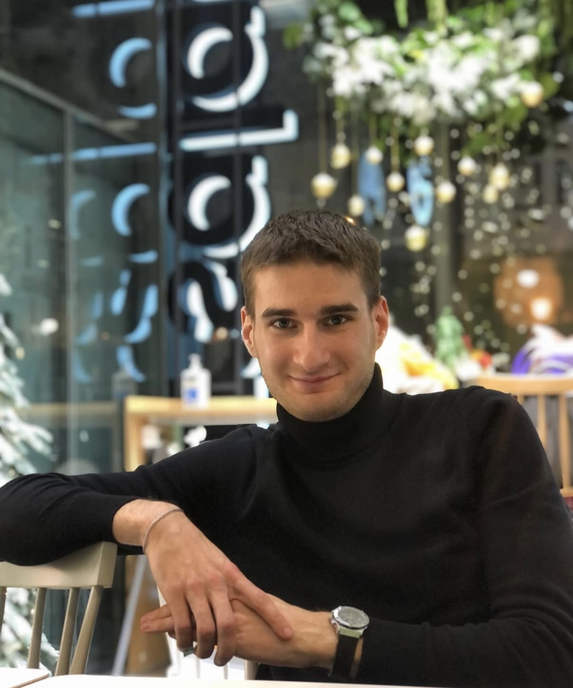

Юридичний захист у найскладніших обставинах
7 років юридичного стажу. Спеціалізуюся на вирішенні критичних правових ситуацій. Завдяки великому досвіду та роботі професійної команди, ми забезпечуємо результат навіть у найбільш заплутаних справах.
Справа: Визнання військовослужбовця придатним попри наявність контузії та травм хребта.
Результат: Через Центральну ВЛК домоглися перегляду рішення. Клієнта визнано непридатним до військової служби з виключенням з військового обліку.
Справа: Відмова у виплаті допомоги сім’ї загиблого через помилку в документах частини.
Результат: Помилку виправлено через суд. Сім’я отримала повну суму допомоги (15 млн грн).
Справа: Відмова ПФУ перераховувати пенсію згідно з оновленою довідкою.
Результат: Суд задовольнив позов. Пенсію збільшено у 1.8 раза, виплачено заборгованість за 2 роки.
Не підписуйте висновок без зауважень. Потрібно негайно подавати скаргу до вищої інстанції. Наші юристи допоможуть правильно зафіксувати ці порушення та домогтися повторного огляду.
Так. Найчастіші підстави: догляд за рідними з інвалідністю I-II групи або самостійне виховання дитини. Ми готуємо повний пакет документів для успішного результату.
Головне — не зволікати. Потрібно документально підтвердити поважні причини відсутності. Ми забезпечуємо захист у ДБР та військовій прокуратурі для мінімізації наслідків.
Вартість залежить від складності справи, обсягу необхідних документів та стадії процесу (консультація, досудова робота чи представництво в суді). Після первинного аналізу ситуації ми формуємо фіксовану суму або домовляємося про «гонорар успіху». Всі фінансові умови прописуються в офіційному договорі, без прихованих платежів.
Звернувся щодо перерахунку військової пенсії. ПФУ відмовляв, але завдяки фаховій роботі Віталія справу виграли в суді. Пенсію збільшили майже вдвічі!
Допомогли з оскарженням рішення ВЛК. Мене визнали придатним, але адвокати добилися повторного огляду та виключення з обліку.
* Екстрені ситуації (затримання) — 24/7